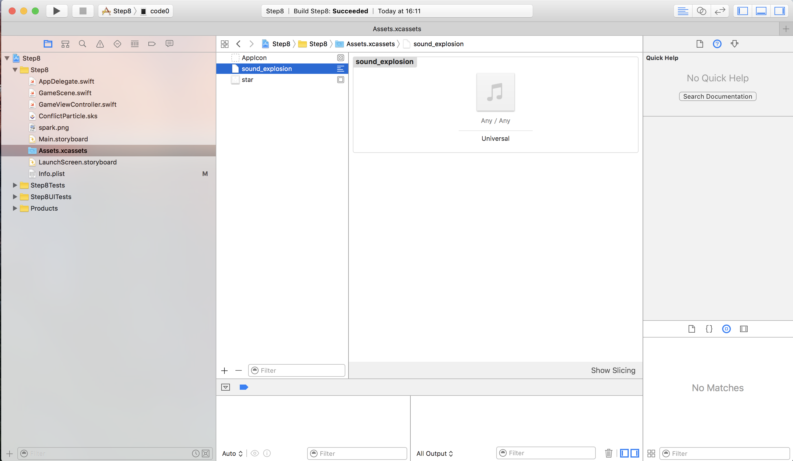

Swift Seminar
実行環境
OS X El Capitan 10.11.5Xcode 8.0 beta(8S128d)
Seminar1
※各Stepのプログラムはこちらにあります。
Step1:プロジェクト作成
- Xcodeを起動し、Create a new Xcode projectを選択する。
- Gameを選択してNextを押下する。
- アプリ名、組織名は任意のものを入れてNextを押下する。
- 任意のディレクトリを選択してNextを押下する。


Step2:プロジェクト初期化
- sksファイル(Actions.sks, GameScene.sks)を削除する。
- GameScene.swift : GameSceneの中身を空にする。
class GameScene: SKScene { /// Sceneが表示された際に実行される override func didMove(to view: SKView) { } } - GameViewController.swift : viewDidLoadを以下に変更する。
override func viewDidLoad() { super.viewDidLoad() // シーンの作成 let scene = GameScene() // View ControllerのViewをSKView型として取り出す let view = self.view as! SKView // FPSの表示 view.showsFPS = true // ノード数の表示 view.showsNodeCount = true // シーンのサイズをビューに合わせる scene.size = view.frame.size // ビュー上にシーンを表示 view.presentScene(scene) }
Step3: 文字を表示する
- 習得事項
- SKLabelNodeを使って文字を表示できる。
- 課題
-
SKLabelNodeを使って文字列「Hello, SpriteKit」を表示する。
- フォント名 Chalkduster
- 文字サイズ 30
- 文字色 green
- 文字の位置 画面の中心
Step4: 画像を表示する
- 習得事項
- SKSpriteNode、SKTextureを使って画像を表示できる。
- 課題
-
画像を表示変更する。
- SKSpriteNodeを使って画像を表示する。
- SKTextureを使って画像を変更する。
Step5: アニメーション
- 習得事項
- SKActionを使ったアニメーションができる。
- 課題
-
SKActionを使って対象物にアニメーションを付ける。
- SKSpriteNodeを使用しアニメーションの対象物を生成する。
- 対象物を配置する。
- SKActionを使用しアニメーションを作成する。
- 作成したアニメーションを対象物に設定する。
- 補足事項
- 対象物はbackground.pngを使用するためAssets.xcassetsに画像ファイル(background.png)をドラッグアンドドロップする。

Step6: 物理空間の生成と衝突
- 習得事項
- physicsWorld、physicsBody、SKPhysicsBodyを使って物理空間を生成し、衝突イベントを設定できる。
- 課題
-
physicsWorld、physicsBody、SKPhysicsBodyを使って物理空間を生成し、他物体との衝突イベントを生じさせる。衝突時に一方を消す。
- SKSpriteNodeを使用し対象物を生成する。
- 対象物をランダムに配置する。
- physicsWorld、physicsBody、SKPhysicsBodyを使って物理空間を生成する。
- 衝突イベントを設定する。
- 補足事項
- 対象物はenemy.pngを使用するためAssets.xcassetsに画像ファイル(enemy.png)をドラッグアンドドロップする。
Step7: タップ
- 習得事項
- タップイベントを設定できる。
- 課題
-
タップすると飛行機がタップ位置に移動する。ダブルタップの場合移動後に弾丸を発射する。
- SKSpriteNodeを使用し飛行機を生成し配置する。
- タップ開始イベントを設定する。
- タップ終了イベントを設定する。
- SKShapeNodeを使用し弾丸をタップ位置に生成し、アニメーションを設定する。
Step8: パーティクルと効果音
- 習得事項
- パーティクルと効果音を設定できる。
- 課題
-
タップすると星のパーティクルが発生し、効果音が鳴る。パーティクルは一定時間経つと消える。
- SKEmitterNodeを使用し星のパーティクルを生成する。
- SKActionを設定し効果音をつける。
- タップ開始イベントで1,2を実行する。
- 補足事項
- 星(star.png)と効果音(sound_explosion.mp3)を使用するためAssets.xcassetsに対象ファイルをドラッグアンドドロップする。
Step9: 加速度センサー
- 習得事項
- 加速度センサーを使用できる。
- 課題
-
端末を傾けると飛行機が横(X軸方向)に移動する。
- SKSpriteNodeを使用して飛行機を生成する。
- Sceneと飛行機に物理空間を設定する。
- 加速度データを使用して飛行機のx方向の移動距離を算出する。
- 1フレームごとに3から飛行機の位置を更新する。
Step10: シーン間の遷移
- 習得事項
- シーン間の遷移ができるようになる。
- 課題
-
3つのシーン(HomeScene、GameScene、ResultScene)を生成して遷移させる。
- 3つのシーンを生成する。
- 遷移イベントのトリガー(タッチ開始イベント)を生成する。
- 遷移元から遷移先にuserDataを使用しデータを渡す。
Step11: シューティングゲーム
- 習得事項
- Step1〜10までの機能を組み合わせたプログラム作成ができる。
- 課題
-
シューティングゲームを作成する。
- 3つのシーン(HomeScene,GameScene,ResultScene)を生成する。
- HomeScene
- Startラベルを配置する。
- StartラベルをタップするとGameSceneに遷移する。
- GameScene
- 背景画像を設定する。
- 飛行機を設定する。
- エネミーを設定する。
- 弾丸を設定する。
- パーティクルを設定する。
- 飛行機のステータスを設定する。
- 弾丸のステータスを設定する。
- スコアを設定する。
- 接触時のイベントを設定する。
- タップ開始イベントを設定する。
- ResultSceneのuserDataにスコアを保存する。
- ResultScene
- ゲームオーバー、スコア、再スタートラベルを配置する。
- 再スタートラベルタッチするとGameSceneに遷移する。
Step12: データの永続化
- 習得事項
- UserDefaultsを使用したデータの永続化ができる。
- 課題
-
タップした回数を保存、参照、削除する。
- 表示数値、数値Up、End、Save, Clearラベルを配置する。
- 数値Upラベルをタップすると表示数値が+1(インクリメント)される。
- Endラベルをタップすると再度GameSceneを表示する。
- Saveラベルをタップすると表示数値を保存する。
- Clearラベルをタップすると保存されている表示数値を削除する。
Step13: シーンとビューコントローラー間の遷移
- 習得事項
- シーンとビューコントローラー間の遷移ができる。
- 課題
-
シーン -> シーン -> ビューコントロラー -> シーン の順で遷移させる。
- FirstViewControllerでStartScene,EndSceneと遷移する。
- NotificationCenterを使ってEndSceneからSecondViewControllerに遷移する。
- SecondViewControllerからFirstViewControllerのStartSceneに遷移する。